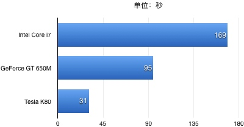

本文将指导你如何在自己的Mac上部署Theano + Keras的深度学习开发环境。
如果你的Mac不自带NVIDIA的独立显卡（例如15寸以下或者17年新款的Macbook。具体可以在“关于本机->系统报告->图形卡／显示器”里查看），那么你可能无法在这台Mac上使用GPU训练深度学习模型。不过这并不遗憾。事实上，我在自己的Macbook上（15-inch，Early 2013，NVIDIA GeForce GT 650M 1024 MB）做了一个简单的测试：在mnist数据集上训练CNN模型时，使用GPU仅比使用CPU快了1.7倍——在更专业的Tesla K80显卡上，这个数字是5倍。因此，我更推荐购买一台有着强劲性能的显卡的PC本（比如某些游戏本）来搭建深度学习的开发环境，或者是直接租赁AWS的Instance服务。
下面步入正题。
安装GPU开发环境
几乎所有的主流深度学习框架在使用GPU进行模型训练时都依赖于两个底层环境：CUDA和cuDNN。前者是一个使用GPU进行并行计算的平台，后者是一个封装了使用GPU加速神经网络计算的library。
安装CUDA
确保你的显卡被CUDA所兼容。前往CUDA-capable GPU检查可用的显卡型号。
接下来，安装xcode（通过App Store）和命令行工具：
xcode-select --install。这一步会自动安装clang编译器，可以在命令行里输入：/usr/bin/cc --version进行验证。
clang编译器也是安装Theano的预备环境之一。前往官网下载并安装CUDA8.0（dmg安装包）。注意选择相应的平台。这一步会同时安装CUDA driver和CUDA toolkit。
配置环境变量。打开
~/.bash_profile，输入四行命令：export CUDA_ROOT=/Developer/NVIDIA/CUDA-8.0 export PATH=$CUDA_ROOT/bin${PATH:+:${PATH}} export DYLD_LIBRARY_PATH=$CUDA_ROOT/lib${DYLD_LIBRARY_PATH:+:${DYLD_LIBRARY_PATH}} export LD_LIBRARY_PATH=$CUDA_ROOT/lib:$LD_LIBRARY_PATH其中，环境变量CUDA_ROOT给Theano指定了CUDA的安装目录，也可以被设置为
/usr/local/cuda（这两个路径下的文件均通过软链接被link到了一起）。配置完成后，退出编辑器，
source ~/.bash_profile并执行nvcc -V验证CUDA的安装是否正常。
安装cuDNN
前往官网下载cuDNN压缩包。注意选择合适的平台。我下载的是cuDNN5.1 for CUDA8.0（截止到17年4月，Theano尚不支持cuDNN6.0）。
解压缩下载的文件，将
include目录下的*.h文件复制到$CUDA_ROOT/include目录下；将lib目录下的*.so文件复制到$CUDA_ROOT/lib目录下。
至此，完成了GPU开发环境的基本部署。
安装Theano
Theano的安装极其简单：
首先，前往Miniconda安装Conda
使用Conda安装第三方依赖（“<>”里为可选包）：
conda install numpy scipy mkl <nose> <sphinx> <pydot-ng>使用Conda安装Theano（如果出现网络连接异常，也可以使用pip进行安装。参见官网安装指南）：
conda install theano pygpu
安装Keras
Keras是一个建立在Theano和TensorFlow基础上，封装了大量底层接口，方便研究人员快速搭建模型原型的深度学习开发框架。它提供了pip和从源码直接安装两种方式。
使用pip安装：
sudo pip install keras
从源码直接安装：
git clone https://github.com/fchollet/keras.git
cd keras
sudo python setup.py install
Keras默认以TensorFlow为底层计算引擎。第一次执行import keras命令后，会生成~/.keras/keras.json文件。打开这个文件，将"backend": "tensorflow"修改为"backend": "theano"，即完成了后端计算引擎到Theano的切换。
至此，一个基本的深度学习开发环境已搭建完成。重启电脑以确保所有配置均已生效。
环境测试
我们可以运行一些demo来测试环境的安装是否正常。
从Github上下载Keras的源码，进入examples子目录，输入命令：
THEANO_FLAGS=mode=FAST_RUN python mnist_cnn.py
该命令将以CPU模式在mnist数据集上训练CNN模型。
输入命令：
THEANO_FLAGS='mode=FAST_RUN,device=cuda,floatX=float32,optimizer_including=cudnn' python mnist_cnn.py
该命令将以GPU模式（并使用cudnn加速）在mnist数据集上训练CNN模型。
如果一切正常，你将看到类似下图的屏幕输出：

为了对MacBook上GPU的计算性能有进一步的了解，我对比了这块GPU（GeForce GT 650M）和同一台电脑上的CPU（Intel Core i7）以及AWS上p2.xlarge实例的Tesla K80显卡在MNIST数据集上训练一个CNN模型所消耗的时间（one epoch）：

可见，与专业级的Tesla显卡相比，MacBook上的GeForce显卡足足慢了三倍——不过这也比i7处理器快了1.7倍。而在更一般的CPU处理器上，一个epoch的训练时间更是达到了250秒以上，使用一块Tesla K80显卡至少节省了8倍的时间！这也是为什么很多人认为GPU的技术变革是深度学习得以快速发展的幕后因素之一。
PS. 在测试GPU的计算性能时发现Theano的一个“bug”：使用新的gpuarray backend（device=cuda）要比旧的cuda backend（device=gpu）慢上十几秒。尚不清楚这是不是gpuarray背后的优化问题。